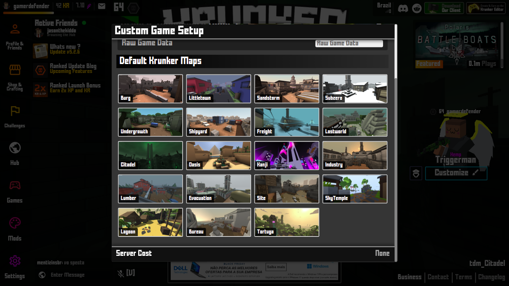
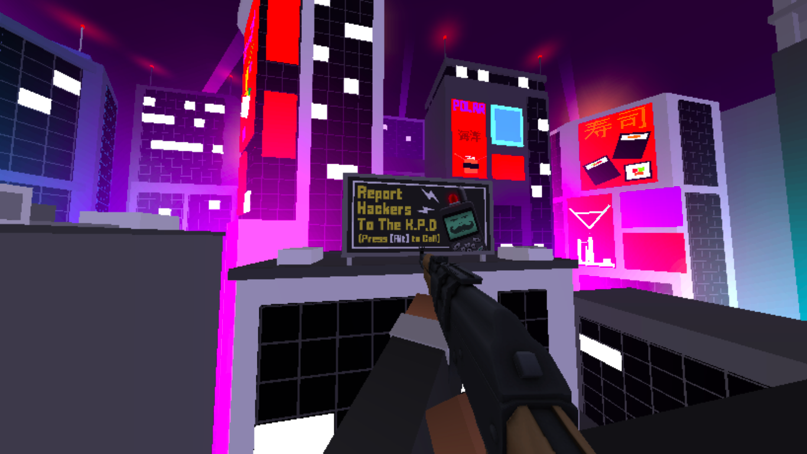
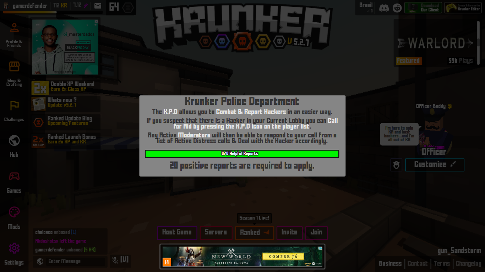

Roda no Browser!
Não há por que se preocupar com armazenamento do dispositivo, uma vez que o jogo se dispõe apenas de um navegador web
Navegadores disponíveis:

Não há por que se preocupar com armazenamento do dispositivo, uma vez que o jogo se dispõe apenas de um navegador web
Navegadores disponíveis:
Graças à responsividade da página, o jogo também pode ser jogado por um dispositivo móvel com touch controls

Todas as armas (fuzil de assalto, fuzil de precisão, submetralhadora, metralhadora, espingarda, revolver, arma semiautomática, bazuca, pistolas-metralhadoras Uzi, faca de combate, besta, Famas e blaster) e as características do jogador (chapéu, face, corpo, cor do corpo, cinturão, sapatos e spray) podem ser customizadas. Alguns membros da comunidade Krunker estão constantemente criando novas skins e vendendo-as no mercado do jogo. Algumas vezes, o mesmo tileset é adaptado para a criação de várias skins de diversas armas, como é o caso da família “Book of Shadows”, ilustrado pela imagem abaixo:
O mesmo vale para os mapas. Há um editor no qual os próprios jogadores podem construir mapas de diversos tamanhos, importar sons, imagens e texturas, criar adversários para o jogador, determinar objetivos e etc. Outros jogadores podem avaliar positiva ou negativamente os mapas publicados
O jogo dispõe muitas configurações especiais, além das configurações comumente vistas nos jogos, como controles, vídeo e som. Pormenores podem ser ajustados à preferência do jogador, como nacionalidade, em qual servidor se conectar (por padrão é definido o servidor brasileiro pelo IP do jogador), em qual idioma traduzir o jogo, entre muitos outros. Há workspaces com configurações predefinidas para jogadores que desejam otimizar a jogada, minimizando gráficos e dispensando supérfluos
Curiosamente, há uma configuração intitulada “Hide Game Title”, que consiste em exibir uma tela falsa imitando um documento em branco do Google Docs, quando o jogador apertar 5. O texto digitado no campo é exibido como o título do suposto documento. Pode ser útil durante uma aula de Construção de P Algoritmos ;)
O jogo também pode ser instalado no computador do jogador, caso o navegador não dê conta do serviço
Sistemas operacionais disponíveis:
Mesmo com a opção de criar mapas personalizados, o jogo dispõe dezenove mapas padrão. Ao entrar no endereço https://krunker.io/, você será redirecionado para uma partida aleatória em um desses mapas. Você também pode ser o host de uma partida e convidar seus amigos, além de pôr senha na sala e ajustar outras configurações, como gravidade dos jogadores, número de balas, velocidade do disparo e recuo de cada arma e etc
O jogo tem a sua própria linguagem de programação, chamada KrunkScript, que permite a criação de mapas de modo mais minucioso e também de outros jogos
O jogo faz parte da categoria de jogos No Pain No Gain (do inglês: Sem dor, não há ganho), uma vez que o único método para ter um bom placar é praticando para aprimorar sua precisão e técnicas de locomoção (sim, pois o jogo também tem um mecanismo para fazer o jogador deslizar e ganhar velocidade). Apesar do modo premium e da hierarquia de skins (uncommon, rare, epic, legendary, relic, contraband, unobtainable e NFT), armas de mesma categoria e skins diferentes dão a mesma quantidade de dano. O jogo não se enquadra na categoria Pay to Win (do inglês: Pague para ganhar), uma vez que não há como comprar habilidades ou boosts em Krunker
Há outros gamemodes e minigames para jogadores que não curtem competições. Tudo o que você precisa fazer é criar uma nova sala (sem custo algum) e selecionar os mapas singleplayer, como os mapas de parkour ou mapas com inimigos
Com a pequeníssima rede social criada pelos desenvolvedores do jogo, há como seguir jogadores, fazer amizades, negociar e trocar skins, presentear alguém com KR (a moeda do jogo), entrar em clãs e etc
O jogo tenta balancear alguns personagens OP (do inglês: Overpowered), como o Hunter, personagem do sniper rifle, e o Agent, personagem da Akimbo Uzi. Enquanto a maioria dos personagens tem 100 HP (do inglês: Health Points), Hunter tem apenas 60 HP, pois a sniper é um rifle de precisão e há como matar com um único tiro à curta distância, se dominada a técnica quick scope. Já Agent tem 120 HP, pois não há como mirar com as duas pistolas-metralhadoras, dificultando a vitória do jogador
O jogo está se tornando mais justo desde a criação do K.P.D (Krunker Police Department), um grupo de jogadores selecionados pelos moderadores, que se prontifica a denunciar e banir trapaceiros, gravando a partida com um gravador de tela e provando a trapaça.
 
Não há servidores distintos para jogadores mobile e jogadores de PC. Logo, algumas partidas tendem a ser um pouco injustas nos quesitos de locomobilidade e jogabilidade. Mas nada que espante um expert em jogos para celular
Não há um modo história para os fãs de filmes de guerra. Parte do jogo se resume a trocar tiros com outros jogadores, sem que haja uma história sobre cada mapa, os times ou algo do gênero
O jogo salva estatísticas de cada jogador desde a criação da conta, como número de homicídios, número de mortes, número de vitórias, número de derrotas, porcentagem da precisão (com base em um cálculo não revelado pela equipe staff) e etc, mas não impede que jogadores desbalanceados compitam em uma partida aleatória. Novatos, veteranos e convidados podem ser colocados na mesma sala
Como se trata de um jogo ganhando reconhecimento dos internautas desde 20 de maio de 2018 e sendo aperfeiçoado por atualizações, o jogo tem muitos jogadores brasileiros. Lembra que eu mencionei que o jogador podia escolher em qual servidor se conectar, quando elogiei a gama de customizações do jogo? Então... como cada servidor tem um número máximo de jogadores, às vezes você pode se deparar com o servidor brasileiro em sua capacidade máxima. Ainda há como jogar em outros servidores, mas o ping definitivamente estará mais alto e a sua performance será afetada